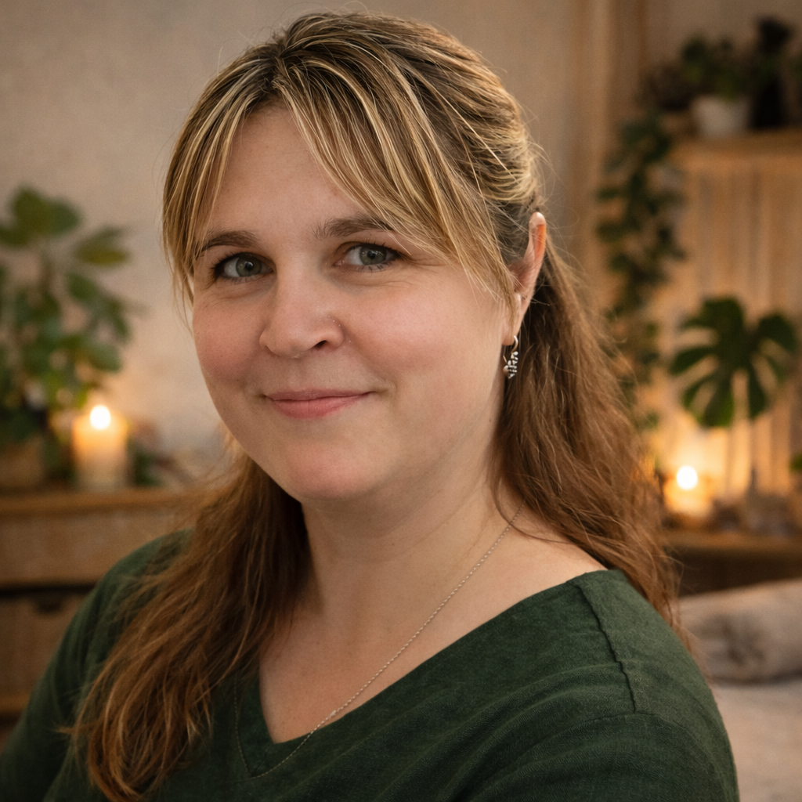

Klasická masáž
Pomáhá uvolnit přetížené svaly, zmírnit napětí a podpořit přirozenou regeneraci těla. Přináší úlevu při únavě, ztuhlosti i dlouhodobém přetížení.
tejpování • baňkování
Dornova metoda
Úleva pro záda, šíji i mysl. Klidná péče přesně tam, kde ji tělo potřebuje.
Každá návštěva začíná krátkou domluvou. Společně vybereme péči, která dává smysl právě vám. Pro vaši představu zde nabídka jednotlivých druhů péče včetně orientační doby trvání a ceny.
Pomáhá uvolnit přetížené svaly, zmírnit napětí a podpořit přirozenou regeneraci těla. Přináší úlevu při únavě, ztuhlosti i dlouhodobém přetížení.
Jemná technika podporující tok lymfy a odvod přebytečných tekutin z těla. Přispívá k pocitu lehkosti, regeneraci organismu a celkové rovnováze.
Šetrná manuální metoda zaměřená na vyrovnání kloubů a páteře. Pomáhá obnovit přirozené postavení těla a může ulevit při bolestech zad či pohybových potížích.
Cílená práce s bolestivými spoušťovými body ve svalech. Pomáhá uvolnit hluboké napětí a zmírnit bolest, která se může přenášet i do jiných částí těla.
Tradiční metoda využívající podtlak ke stimulaci prokrvení a uvolnění zatuhlých svalů. Podporuje regeneraci tkání a přirozené ozdravné procesy těla.
+4 další techniky
Prohlédnout nabídkuPomáhá odlehčit namáhaným svalům a podpořit stabilitu vybraných míst při běžném pohybu i rekonvalescenci. Vhodné jako samostatná péče i jako navázání na masáž.
Citlivá práce s reflexními body na chodidlech přináší úlevu unaveným nohám a zároveň působí harmonizačně na celé tělo. Příjemná volba pro zklidnění i regeneraci.
Jemný doplněk pro chvíle, kdy chcete podpořit pocit lehkosti a zklidnění. Nejlépe funguje jako individuálně zvolená součást péče podle toho, co právě dává smysl.
Příjemná hřejivá péče pro ruce nebo nohy, která pomáhá změkčit pokožku, uvolnit drobné napětí a dopřát tělu klidnější doznění po hlavní terapii.
Klidnější forma péče zaměřená na nejčastěji přetížené partie. Pomáhá uvolnit ramena, šíji i horní část zad a přináší příjemnou úlevu po náročném dni.
Jemná péče zaměřená na uvolnění čelistí, spánků, šíje a vlasové části hlavy. Pomáhá při napětí, únavě i ve chvíli, kdy si chcete dopřát klidnější zastavení.
Práce se zvukem podporuje zklidnění, uvolnění a jemné naladění organismu. Vhodná pro chvíle, kdy tělo potřebuje oddech a mysl vypnout od každodenního tempa.
Masážím se věnuji od roku 2017. Začalo to kurzem tejpování a vůbec jsem tehdy netušila, kam až mě to zavede. Postupně přibývaly další kurzy, nové techniky i zkušenosti a čím víc jsem se do toho ponořovala, tím víc mě tahle práce bavila. Dnes při masáži přirozeně propojuji to, co jsem se za ty roky naučila. Každý člověk je jiný a každé tělo potřebuje něco trochu jiného, proto vždy hledám cestu, která bude dávat smysl právě vám.

základní kurz tejpování
další specializace tejpování (děti, těhotné, neurologie)
intenzivní kurz klasických masáží
trigger point terapie
Dornova metoda
baňkování
relaxační terapie plosky nohy
terapie zvukem
svíčkování
lymfatické masáže těla a obličeje
kurz první pomoci
otevření vlastní praxe
Masérna na Velkém Ořechově je klidné místo pro krátkou domluvu i péči, která se přizpůsobí tomu, co právě potřebujete. Nečekejte nic strojeného — spíš příjemné komorní prostředí a lidský přístup.
Místnost je menší, útulná, poskytuje dostatek klidu a soukromí. Všechno je připravené tak, abyste se mohli pohodlně uvolnit a nerušil vás zbytečný spěch okolí.
Pár stručných odpovědí na to, na co se klienti ptají nejčastěji. Pokud budete chtít něco upřesnit, stačí se ozvat a vše spolu doladíme.
Nejrychlejší je zavolat na +420 731 318 636. Objednat se můžete také e-mailem a termín spolu doladíme.
Masérna se nachází ve Velkém Ořechově 208. Provoz probíhá dle objednávek, proto je vždy potřeba domluvit si termín předem.
Cena se odvíjí od konkrétní služby a délky péče. Přehled najdete v nabídce masáží, případně se ozvěte a Zdeňka vám ráda doporučí vhodnou variantu i orientační cenu.
To je úplně v pořádku. Stačí se ozvat, krátce popsat, co vás trápí nebo co od návštěvy čekáte, a společně vyberete péči, která vám bude dávat největší smysl.
Ano, dárkový poukaz je možné domluvit individuálně. Pokud chcete někomu dopřát masáž nebo terapii jako dárek, stačí se ozvat a vše spolu doladíme.
Nejjednodušší je prostě zavolat. Případně pošlete sms či email a já Vám obratem termín masáže nabídnu.